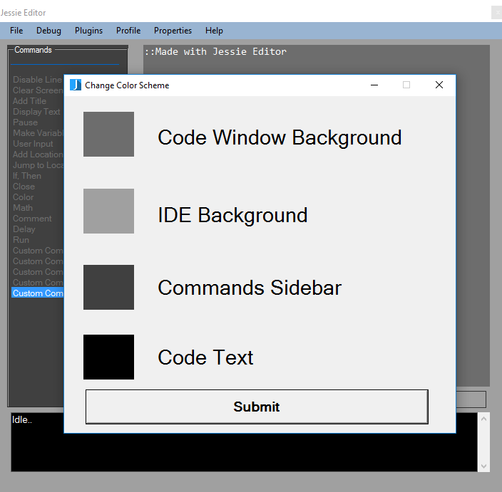
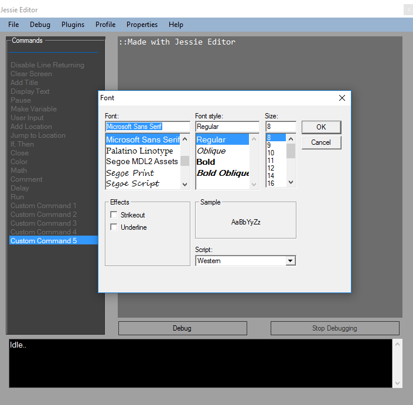
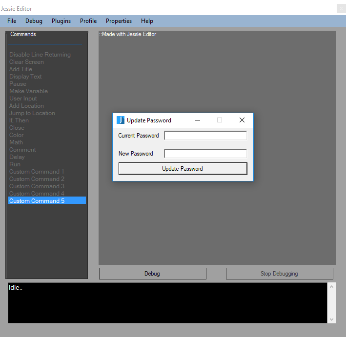
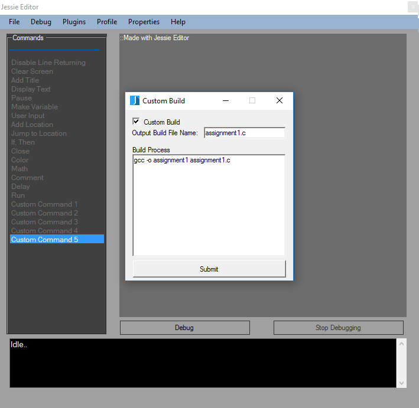

Customizing Jessie Editor
Jessie Editor has been designed to meet any application and any user's specifications.
This will show you how to change the settings of Jessie Editor.
Changing the colors
Jessie Editor allows you to set the defualt looks to whatever color you want. To change a
color, in Jessie Editor select the properties menu and select Color Scheme. From here you
can select whatever part of the IDE you would like to change. To change one click on whichever
item you would like to change and select ok. To save changes click the submit button.

Font
To
change the font of the code editor, select the properties menu and
click font. This will allow you to select any font of your choice.

Change Password
If
the teacher wan'ts to change the Jessie Editor Password, they can do it
by clicking the properties menu and selecting change password.
A
form will open and they will be asked to enter their old password and
the new password. Once they click Update Password the new password will
be stored.

Custom Build
As
stated, Jessie Editor is designed to be adaptable to any programming
language. One way this can be used is to set a custom build.
To do
this go to the properties menu and select custom build. A form will
popup. To enable custom build, check the box labeled custom build.
The
textboxes below it will then become active. In the first textbox you
will type in your build file name which will determine what file you
want your program
to be saved as upon debugging. You can then type
in your custom build commands, in the textbox below, which will be ran
whenever the debug button or
compile button is activated.
